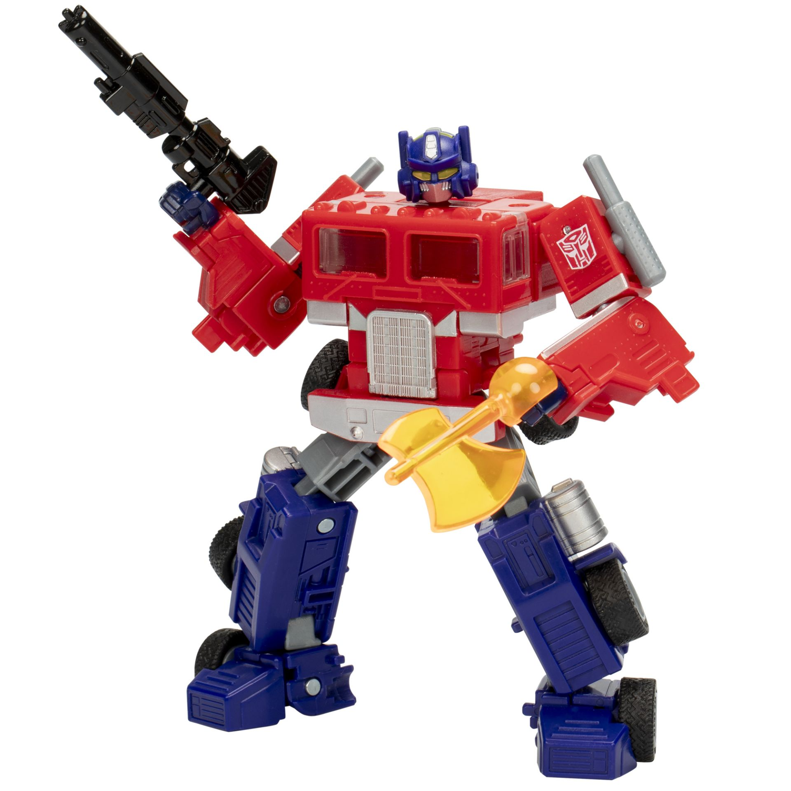

ITMD 361 Project One
How to Transform Optimus Prime
This is Transformers Legacy United Optimus Prime:

In this step by step guide, I will show you how to Transformers him from robot into vehicle form. Also, I will drop a video at the bottom displaying the process and more. Video below was produced and is owned by EMGO316 on YouTube, all credit for the video goes to him.
Transformation: Robot to Truck
- Step 1: Take the forearms, rotate them back, and close them back up. Repeat on other arm.
- Step 2: Bend elbows, bend arms back but not a lot
- Step 3: Plug front bumper section into crotch, securing unit into place.
- Step 4: Bring feet down, tab legs together.
- Step 5: Grab legs, bring entire lower region up onto the body until legs are aligned with truck cab.
- Step 6: Rotate both arms into body, connect tabs on arms into slot on legs
- Step 4: Squeeze toy to ensure all thats and slots are aligned.
- Step 5: Congratulations, Optimus Prime is in his truck mode!